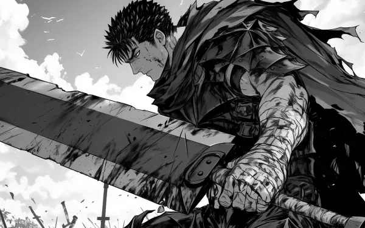

Seinen manga is a genre that stands out in the world of Japanese comics for its mature, complex storytelling and themes that resonate with adult readers. Unlike shonen (targeted at younger male audiences) or shojo (targeted at younger female audiences), seinen manga is designed to appeal to older teens and adults, often focusing on deeper, more philosophical themes, complex characters, and intricate plots.
One of the key distinguishing features of seinen is its willingness to tackle mature subjects, including psychological struggles, social issues, and existential questions. It often explores darker or more nuanced aspects of life, making it distinct from the more action-driven and fantastical elements seen in other manga genres. Seinen is known for its slower pacing, character-driven narratives, and realistic approach to storytelling, making it perfect for readers who enjoy more thought-provoking material.